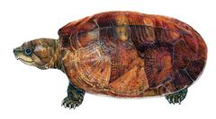
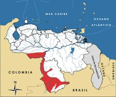

Peltocephalus dumerilianus
| Cabezón | |
|---|---|
|  | |
| Riesgo de extinción | |
 Vulnerable (UICN) | |
| Clasificación científica | |
| Reino: | Animalia |
| Filo: | Chordata |
| Clase: | Reptilia |
| Orden: | Testudines |
| Familia: | Podocnemididae |
| Género: | Peltocephalus |
| Especie: | Peltocephalus dumerilianus |
| Nombre binomial | |
|
Peltocephalus dumerilianus Schweigger, 1812 | |
| Distribución | |
|
 Mapa de distribución de Peltocephalus dumerilianus | |
Contenido
Información de Evaluación
- Categoría y Criterio Regional: Vulnerable A2d
- Fecha de Evaluación Regional: 2015
- Evaluadores: Jesús Morales-Campos y Ariany García-Rawlins
- Categoría y Criterio Global: Vulnerable A1acd
Justificación
Evaluaciones Previas
1999: Vulnerable (VU)
2008: Vulnerable (VU)
Información General
Nombres comunes
Cabezón, tortuga cabezona, big-headed Amazon river turtle, big-headed sideneck.
Notas taxonómicas
Sinónimos
Podocnemis tracaxa y Peltocephalus tracaxa
Descripción
Tortuga de río parecida al terecay (Podocnemis unifilis) debido al tamaño y a la similitud entre sus caparazones. Se distingue fácilmente por su gran cabeza que puede llegar a medir hasta 8 cm de ancho (Pritchard y Trebbau 1984, Pérez, J. 1990). El caparazón, bastante alto, alcanza hasta 68 cm de longitud en los machos adultos, siendo un poco más pequeño en las hembras, y es de coloración negruzca, contorno oval y en forma de domo, expandido ligeramente hacia la parte de atrás. Su peso promedio es de 8 kg en las hembras adultas y de 11 kg en los machos (A. Arteaga obs. pers.). En el peto no tiene charnelas. Posee gran fuerza en las mandíbulas. La ausencia de ornamentación facial, al igual que la disposición lateral de sus ojos y la mandíbula en forma ganchuda la diferencian del género Podocnemis. Sus extremidades son muy poco palmeadas, por lo que no se le conoce como muy nadadora, y más bien pasa la mayor parte del tiempo caminando sobre el lecho de los ríos, lejos de la corriente principal. No suele asolearse ni anidar en las riberas, sino en tierra firme (Rueda-Almonacid et al. 2007). La hembra pone sus huevos en diversos sustratos, en playas o dentro del bosque entre raíces, nidos de hormigas, termitas o junto a troncos caídos (Castaño-Mora 2002).
Distribución
Especie con distribución amplia al norte de Suramérica. Ha sido registrada en la cuenca sur del río Orinoco y en la vertiente norte de la cuenca del río Amazonas, en el sur de Venezuela, este de Colombia, Ecuador oriental, noreste de Perú y Guyana Francesa, y al norte de Brasil. En Venezuela está prácticamente ausente al norte del Orinoco, pero se observa en ocasiones en el extremo oriental del estado Apure, según unos pocos registros en los ríos Capanaparo, Cinaruco, Potrerito y Orinoco. Su abundancia es mayor hacia el sur del estado Amazonas, en el río Autana, caño Atacavi, San Carlos de Río Negro, Macuruco y Santa Cruz de Atabapo en el río Atabapo, lugares donde parece estar asociada a los ríos de aguas negras (Pritchard y Trebbau 1984, Rodríguez, J. P. y Rojas-Suárez 2003).
- Sistema: Terrestre, Dulceacuícola
- Bioregión:
- Intervalo altitudinal (m): Temporalmente sin información
- Endémica: No
Situación
Aunque Peltocephalus dumerilianus presenta una distribución amplia en la Amazonía venezolana, muchas de sus poblaciones enfrentan presiones de captura que podrían causar extinciones locales. Su cogida es mucho más frecuente que la de otros pelomedúsidos (Pérez, J. 1990). La disminución poblacional de otras especies de río, como la arrau (Podocnemis expansa), podría estar aumentando la presión sobre esta e incluso sobre otras tortugas de menor tamaño (Rodríguez, J. P. y Rojas-Suárez 2003). En el ámbito internacional la UICN la clasifica Vulnerable (IUCN 2014). En Colombia se le reporta como Casi Amenazada (Castaño-Mora 2002).
- EOO (km2): Temporalmente sin información
- AOO (km2): Temporalmente sin información
- Tendencia Poblacional: Desconocida
Amenazas
En el territorio venezolano la especie es objeto de intensa cacería y comercio artesanal. Es utilizada como recurso proteico por comunidades locales y se considera muy importante dentro de la economía de ciertos poblados, donde es canjeada por artículos de primera necesidad (Pérez, J. 1990). Es perseguida especialmente en los lugares donde escasean la tortuga arrau (Podocnemis expansa) y el terecay (Podocnemis unifilis) (Castaño-Mora 2002). Su capacidad de anidar en múltiples lugares dificulta la localización de los nidos, lo que la protege de depredadores humanos, sin embargo, los nidos suelen ser devastados por animales, aunque la mayor pérdida puede generarse por la creciente inesperada del nivel de las aguas (Rueda-Almonacid et al. 2007).
Conservación
A escala internacional está incluida en el Apéndice II de la Convención sobre el comercio internacional de especies amenazadas de fauna y flora silvestres (Cites 2014). En nuestro país su cacería era ilegal por disposición de la resolución N° 95 de 1979, sin embargo, dieciséis años después fue incluida en el decreto N° 1485 (del 11 de septiembre de 1996) que deroga la anterior resolución (Venezuela 1979, Venezuela 1996a). Su distribución abarca los parques nacionales Yapacana, Cerro La Neblina y Santos Luzardo (Cinaruco-Capanaparo), y la reserva forestal de Sipapo. No obstante, estas zonas no brindan la suficiente protección a la especie y su explotación no parece ser menor que en áreas no protegidas (Pérez, J. 1990). Para su preservación se requiere implementar planes efectivos de guardería ambiental, educación y manejo de las áreas protegidas. Estos programas deben contemplar la disminución de su comercio, sin afectar a las comunidades indígenas que aprovechan la especie (Rodríguez, J. P. y Rojas-Suárez 2003). Es preciso brindar mayor protección a las planicies de inundación que cuentan con espacios de rebalses, hábitat prioritario para la especie, que no están debidamente representadas en el sistema de áreas protegidas (Pérez, J. 1990). Igualmente, es necesario profundizar los estudios sobre su presencia, abundancia y presión de cacería en los llanos venezolanos.
Autorías
Autores originales
Alfredo Arteaga
Colaboradores
Ilustrador
Ximenamaria Rausseo
Referencias
- Arteaga, A. (2015). Cabezón, Peltocephalus dumerilianus. En: J.P. Rodríguez, A. García-Rawlins y F. Rojas-Suárez (eds.) Libro Rojo de la Fauna Venezolana. Cuarta edición. Provita y Fundación Empresas Polar, Caracas, Venezuela. Recuperado de: animalesamenazados.provita.org.ve/content/cabezon Jue, 12/04/2018 - 12:58
- Castaño-Mora, O. V. (2002). Peltocephalus dumerilianus. Página: 120. En: Castaño-Mora, O. V. (Ed.). Libro rojo de reptiles de Colombia. Libros rojos de especies amenazadas de Colombia. Instituto de Ciencias Naturales-Universidad Nacional de Colombia, Ministerio del Medio Ambiente, Conservación Internacional-Colombia. Bogotá, Colombia.
- Cites. (2014). Apéndices I, II y III (válidos desde el 14 de septiembre de 2014). Convención sobre el Comercio Internacional de Especies Amenazadas de Fauna y Flora Silvestres (CITES). 47 pp.
- IUCN (2014). The IUCN Red List of Threatened Species. Version 2014.3. Accesible en www.iucnredlist.org.
- Pérez, J. (1990). Aspectos básicos de la biología, ecología y valor socio-económico del quelonio cabezón, Peltocephalus dumerilianus (Schweiger) (Testidines, Pelomedusidae), en el Territorio Federal Amazonas. Trabajo Especial de Grado, Universidad Simón Bolívar. Caracas, Venezuela. 210 pp.
- Pritchard, P. C. H. y Trebbau, P. (1984). The Turtles of Venezuela. Contributions to Herpetology, Number 2. Society for the Study of Amphibians and Reptiles. Ann Arbor, Michigan. 468 pp.
- Rodríguez, J. P. y Rojas-Suárez, F. (1999). Libro Rojo de la Fauna Venezolana, segunda edición. PROVITA, Fundación Polar. Caracas. 444 pp.
- Rodríguez, J. P. y Rojas-Suárez, F. (2003). Libro Rojo de la Fauna Venezolana (2a ed. reim.). Provita, Fundación Polar. Caracas. 472 pp.
- Rodríguez, J. P. y Rojas-Suárez, F. (Eds.) (2008). Libro Rojo de la Fauna Venezolana, tercera edición. Provita y Shell Venezuela, S. A. Caracas, Venezuela. 364 pp.
- Rueda-Almonacid, J. V., Carr, J. L., Mittermeier, R. A., Rodríguez-M., J. V., Mast, R. B., Vogt, R. C., Rhodin, A. G. J., de La Ossa-V., J., Rueda, J. N. y Mittermeier, C. G. (2007). Las tortugas y los cocodrilianos de los países andinos del trópico. Serie de guías tropicales de campo Nº 6. Conservación Internacional. Bogotá. 538 pp.
- Venezuela. (1979). Presidencia de la República. Decreto Nº 304 del 20/09/79: Área crítica con prioridad de tratamiento de la cuenca hidrográfica del lago de Valencia. En: Gaceta Oficial Nº 31.829 (26 sep. 1979). Caracas, Venezuela.
- Venezuela. (1996a). Decreto 1485: Animales Vedados para la Caza. Gaceta Oficial No. 36.059 - 7 de octubre de 1996. Caracas.